End-to-end strategic design leadership that transformed a legacy healthcare web application into an integrated digital engagement platform serving the US direct contracting sector — aligning stakeholders, defining vision, and shipping measurable outcomes.
A digital marketplace for bundled healthcare services — connecting employers, care managers, and providers through direct contracting, shared workflows, and a single communication layer.
The live platform scored 49.9 on SUS — Class F. Patients, providers, and care managers navigated fragmented, disconnected screens with no unified channel, causing care delays and lost provider payments.
Coral unifies Employers, Employees, Care Managers, and Medical Service Providers on one platform — enabling direct bundle contracting, secure messaging, and frictionless payment flows under a single digital experience.
My role extended beyond executing screens. I led the design strategy from a blank slate — aligning cross-functional stakeholders, setting the research agenda, driving ideation workshops, and owning quality through prototype validation. Every decision was grounded in user evidence and measured against business outcomes.
— Design Leadership Philosophy on the Coral ProjectI operated as UX Lead — owning strategy, synthesis, facilitation, and design quality — while directing two UX designers across parallel research tracks, wireframe exploration, and visual production.
Full Skillset Applied Across the TeamBefore the team opened Figma, I aligned stakeholders on what success looked like. Without a shared definition, every design decision becomes a debate. With one, the team moves fast and in the same direction.
Coral needed to evolve from a fragmented referral tool into a networked healthcare marketplace — connecting all four stakeholder types through shared workflows, transparent pricing, and a single communication layer. The vision I set: one platform that feels native to every user type, regardless of their role.
Coral was a transformation — not a greenfield. Innovation discovers solutions to new problems. Transformation fixes failing ones. That distinction mattered: before proposing anything, we had to understand the root causes of failure in the existing system. I made this the team's first principle.
Platforms in scope: Web · Android · iOS
The core design challenge: four user types with different mental models, tasks, and success metrics — all on one platform. My architectural mandate was to build a shared IA and interaction model, then apply role-based views on top — not build four separate products.
Establish direct contracts, access marketplace, find Care Managers
Request and track Healthcare Bundles throughout their care journey
Match patients to bundles, manage referrals, coordinate all parties
Create, list and price Healthcare Bundles on the marketplace
Before the team drew a single screen, I ran three structured discovery activities to build an evidence base that removed opinion from the room — and gave every design decision a traceable reason.
I personally led interviews with clinical consultants and domain experts. The outputs: a mapped problem space, a competitive context brief, and clearly defined user segments — all aligned with product, engineering, and clinical leads before user research began. This prevented the team from spending cycles on the wrong problems.
I ran a two-stage heuristic evaluation using Nielsen & Molich's 10 principles — first myself, then with two independent UX experts in a blinded parallel review. Two-stage blind evaluation eliminated confirmation bias and produced a severity-rated issue backlog before a single new screen was proposed.
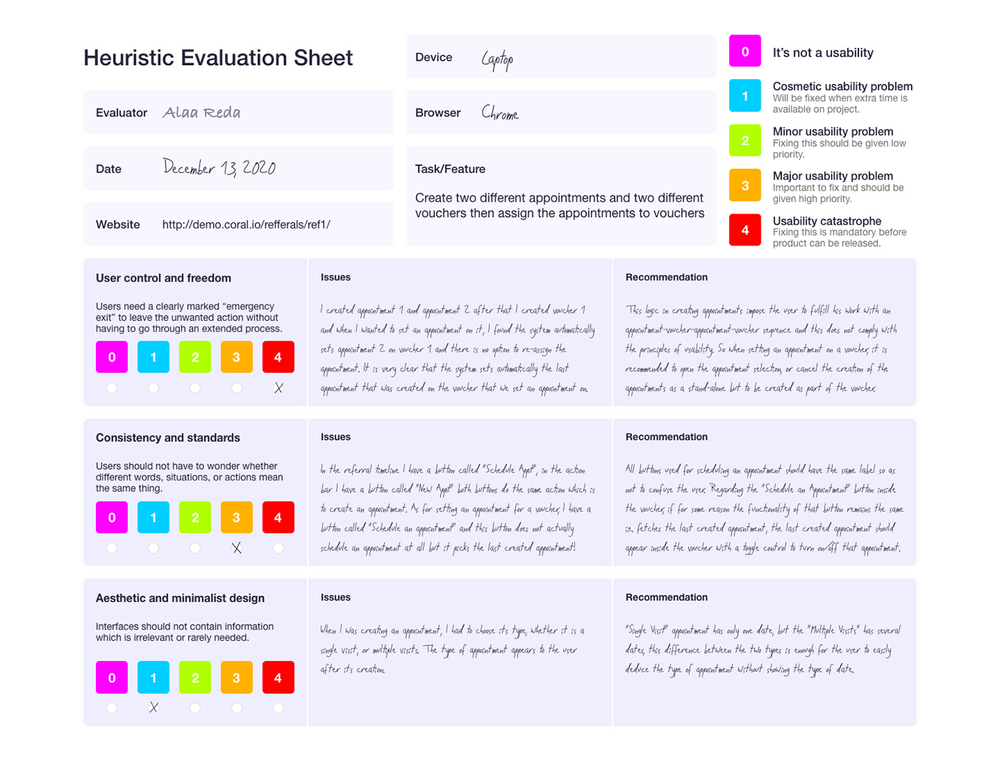
Poor user control on the referral flow · No system feedback for multi-step actions · Appointment scheduling mismatched real-world mental models · Visual inconsistency across appointment types that undermined user trust throughout.
I deployed the System Usability Scale across 10 participants on the live platform. This gave the team a hard number to design against and a clear improvement target (75+). Without a baseline, you can't prove the redesign worked — this was the data I'd bring back to stakeholders after testing.
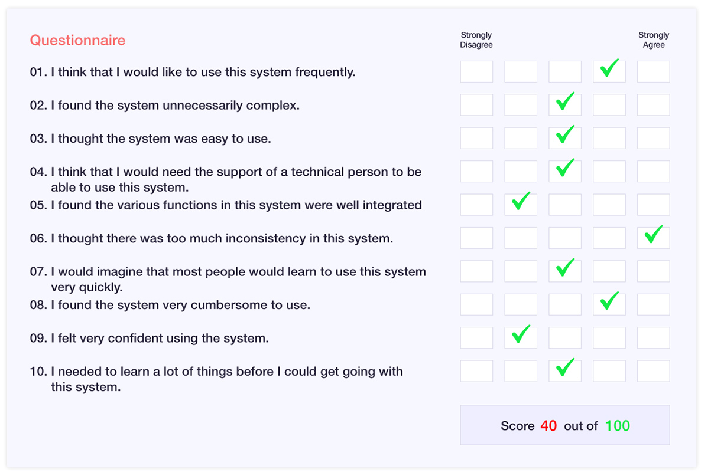
Below 68 is failing. At 49.9, this was unacceptable by every usability benchmark. I used this score to build the case for full transformation with stakeholders, set a post-redesign target of 75+, and re-measured after hi-fi prototype testing. The final score: 78.
I structured the project around Design Thinking and assigned clear phase ownership within the team. The process was iterative — findings from later phases regularly refined earlier ones — but the team always had a clear north star to return to.
I ran both research tracks in parallel to maximise depth without extending the timeline. Designer 1 handled qualitative interviews; Designer 2 ran quantitative surveys. I designed both instruments, reviewed outputs, and synthesised findings into the shared insight layer that drove Define.
Track 1 — Qualitative Research (User Interviews)I designed the interview guide and directed Designer 1 in facilitating semi-structured contextual interviews — both active and passive modes — with 4 Healthcare Professionals. I focused the guide on surfacing the gap between what users said they needed and what they actually did.
Walk me through the last bundle request you received. · What is the single most difficult thing about providing a healthcare service? · What matters most when you can't find the right bundle? · Why do some patients prefer bundles over individual services?
Designer 2 deployed and analysed multiple online surveys. I defined the key questions based on hypotheses from the qualitative track and used the results to pressure-test assumptions before they became design decisions. Three findings directly shaped the architecture:
The Define phase is where I exercised the most leadership. Raw research is noise until someone synthesises it into a direction the team can act on. I ran all synthesis sessions, led the persona workshop, and wrote the POV statements that governed every subsequent decision.
I facilitated an empathy mapping session with both designers using the full research corpus — interview recordings, survey data, field notes. The four-quadrant review (Said / Did / Thought / Felt) surfaced the gap between what users articulated and what they actually experienced.
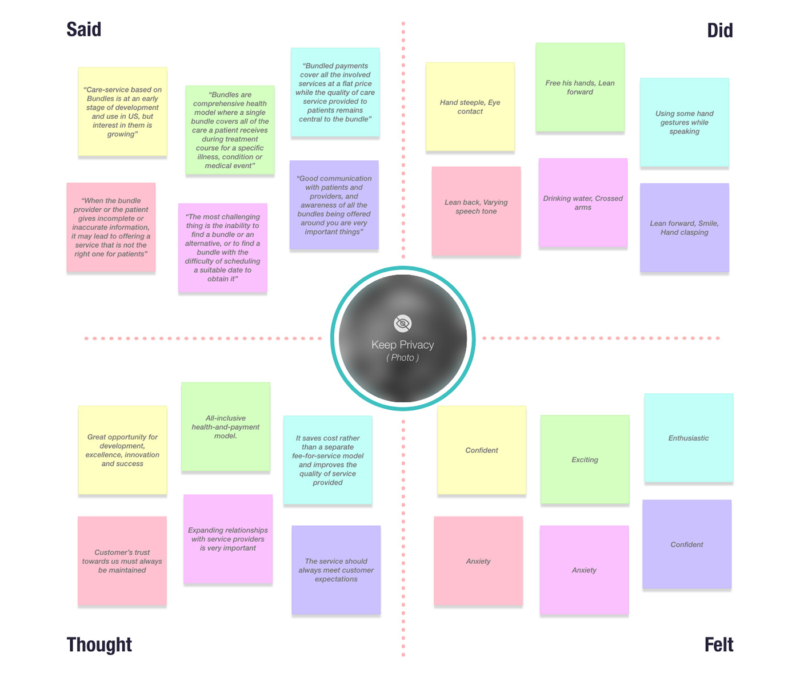
Users felt confident when a bundle covered all their needs seamlessly — and anxious the moment they had to switch context mid-task. The biggest gap: users consistently said communication was critical, yet the platform offered no unified communication layer whatsoever.
I created 3 personas from research synthesis. These weren't portfolio decoration — they were decision tools. When the team disagreed on a direction, we asked: "which choice serves this persona's primary goal?" It resolved most debates in minutes.
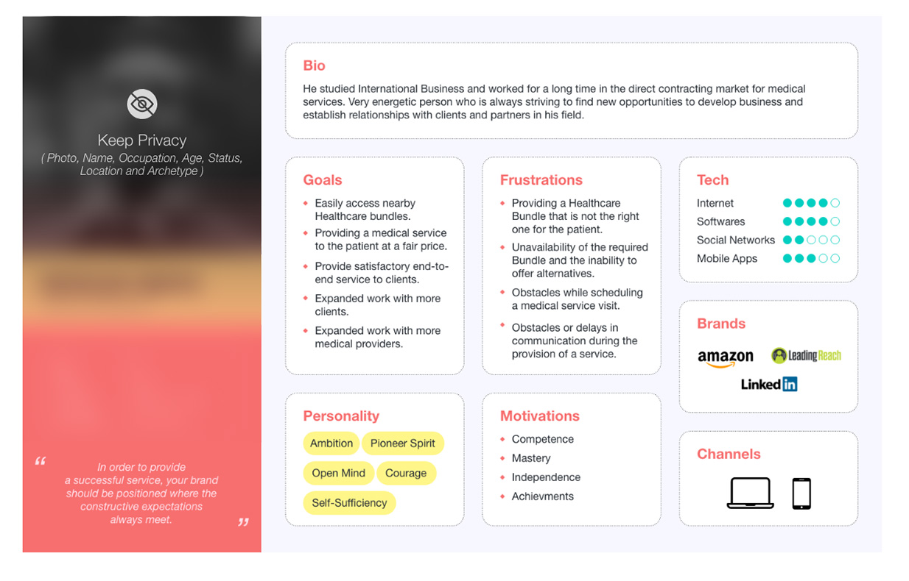
International Business background · Direct contracting veteran · Mid-40s · Driven by competence and independence
I created current-state journey maps for each user segment, capturing scenario, needs, touchpoints, actions, emotions, and opportunities. These were working tools — used in team reviews and stakeholder presentations to build shared empathy around where to focus first.
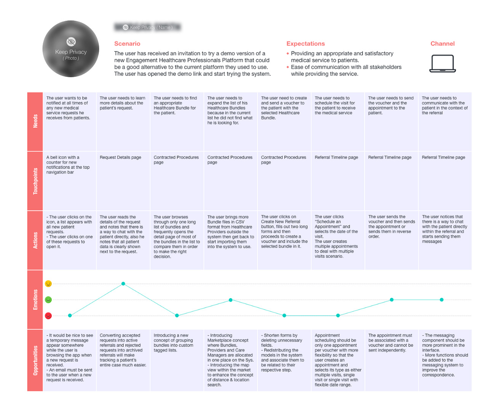
I synthesised all research into a two-row POV that became the team's shared decision compass. When a design call was contested, we returned here first.
| User | Needs | The Insight That Must Not Be Violated |
|---|---|---|
| Healthcare Professionals | Effective, secure, and reliable correspondence across all parties — from the moment a patient requests care to when service is delivered. | Time is the critical variable. Any delay in this chain damages patient outcomes and provider trust. The platform must eliminate coordination friction — not merely reduce it. |
| Patients | Receive care that meets their needs and expectations, on time, without friction. | Patients must never experience healthcare as a coordination problem. That burden belongs to the platform — not the user. |
I directed three ideation methods across the team. The goal wasn't a high volume of ideas — it was surfacing the non-obvious solutions that the evidence already pointed toward, then making fast decisions about which to pursue.
Method 1 — How Might We (HMW)I facilitated HMW sessions with both designers to convert our POV problem statements into creative opportunity frames — open enough for unexpected solutions, narrow enough to stay grounded in the research.
I used SCAMPER to systematically challenge the team's attachment to existing UI patterns — specifically targeting the areas where the heuristic evaluation had found the most severe violations.
| Lens | Question | Outcome |
|---|---|---|
| Substitute | Can we move the messaging panel within the Referral page? | → Led to the unified messaging + referral layout |
| Combine | Can we merge the action timeline and messaging into one view? | → Confirmed the single-panel architecture |
| Minimize | Can we reduce fields on referral creation to lower cognitive load? | → ~35% field reduction on the create referral flow |
| Put to Another Use | Can this be a network — not just a referral tool? | → Repositioned the entire product as a marketplace |
| Rearrange | Can appointments always be created inside a voucher, reversing the current flow? | → Became the new appointment creation model |
I ran Crazy 8s with both designers — 8 concepts per person in 8 minutes — then facilitated a team review, grouping concepts by theme and voting on strongest directions. The breakthrough came from the convergence of independent sessions.
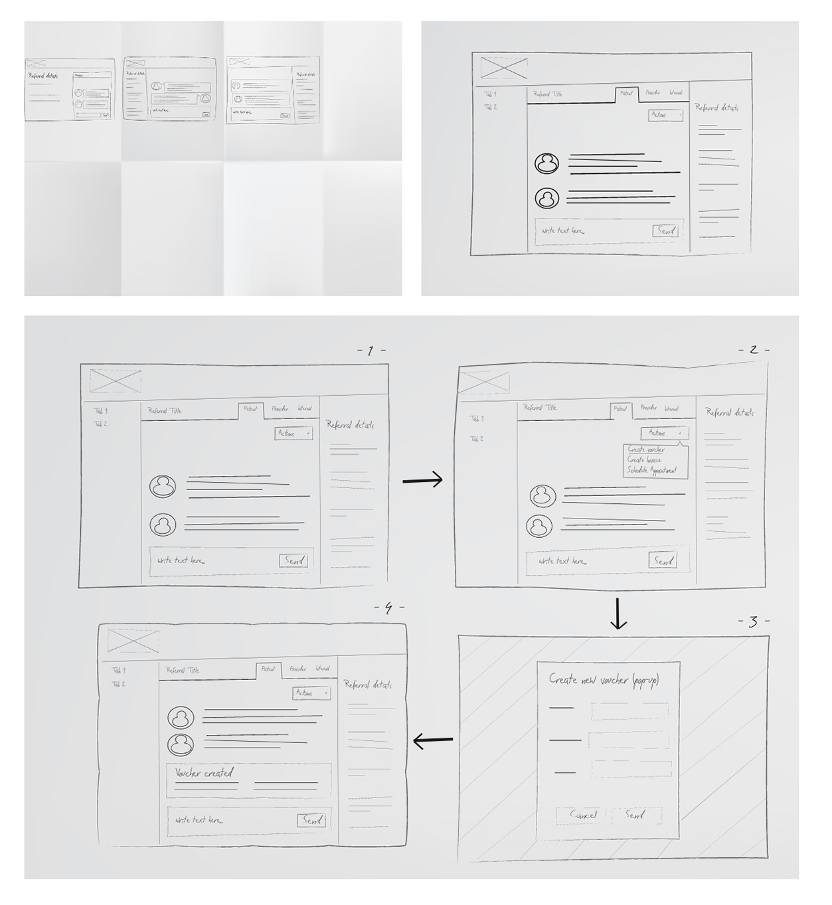
Three designers, three separate sessions — all three independently sketched collapsing the referral list, bundle panel, and messaging into a single context-aware layout. That convergence was more convincing than any single designer's proposal. As the lead, my job was to recognise it and commit. This became the architectural foundation of the entire redesign.
During the ideation and brainstorming sessions we improved the user flow to be more in-line with the user’s needs by asking the following questions.
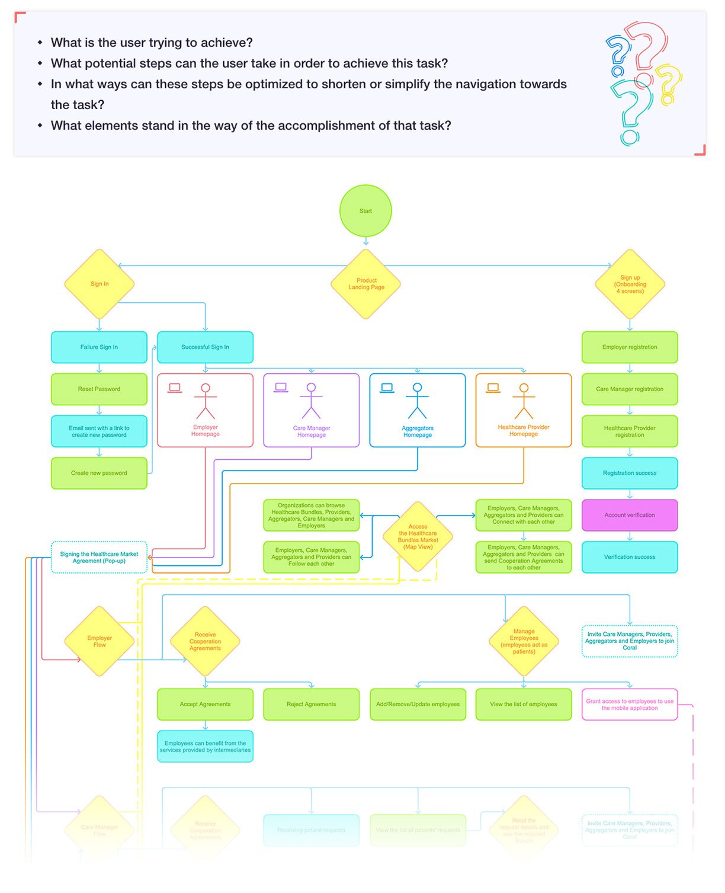
Several sketched and non-sketched ideas are produced at the end of each ideation sessions. These ideas must be categorized and organized in order to turn them into organized and coherent content and features.
IA Validation — Card SortingAfter ideation, both designers ran Open and Closed Card Sorting sessions to validate the proposed IA against how users actually grouped content. I reviewed results and made final IA decisions before wireframe work began — because structural decisions set the ceiling for everything that follows.
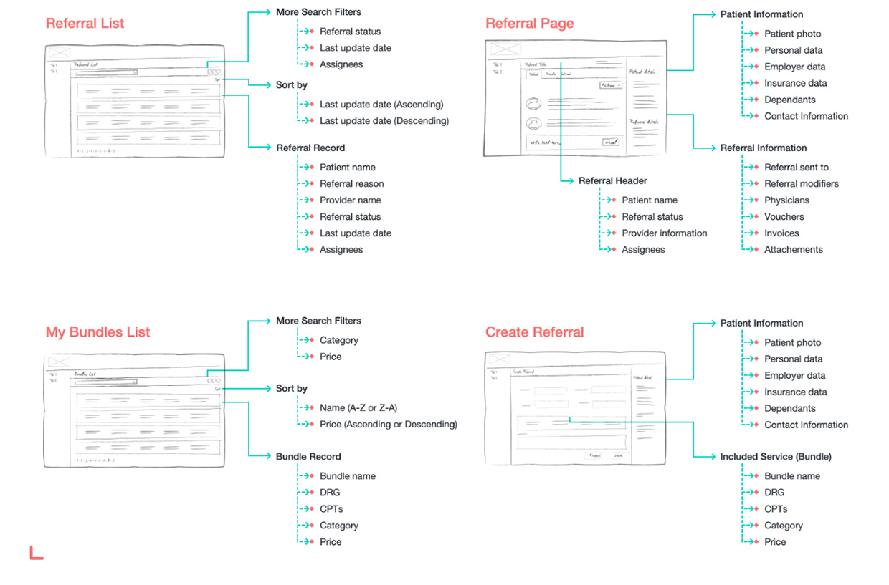
I directed both designers through a three-stage prototyping process. At each gate, I reviewed work against the POV statements and journey maps — ensuring fidelity to the research, not just visual quality.
Starting with hand-drawn Crazy 8s, we moved into digital lo-fi wireframes. I reviewed variant explorations from both designers and made structural decisions before committing to higher fidelity — preventing cycles of wasted effort on visual polish before the layout was validated.
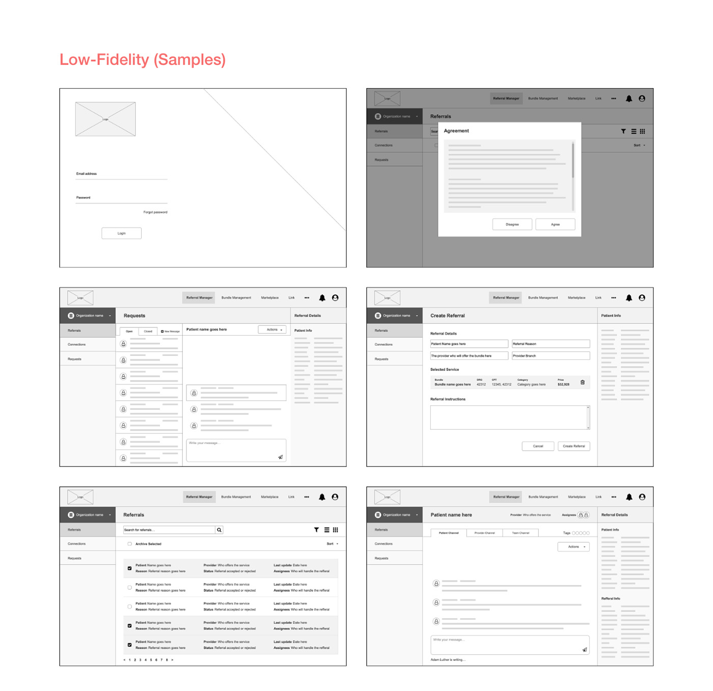
Hi-fi was built by both designers under my direction, with weekly critiques reviewing against the research. I made final calls on interaction patterns. Six key screens delivered:
Filterable and sortable with real-time status indicators — replacing a flat, unordered list
Threaded conversations + persistent patient context — eliminating the 3-screen navigation that was the platform's biggest pain point
3-step flow with inline validation and ~35% fewer fields than the original
Patient info, referral history, and communication in one panel — zero context switching
Searchable by category, price, and location with quality signals surfaced before selection
Payment status embedded in the referral panel — providers no longer leave the referral to track payment
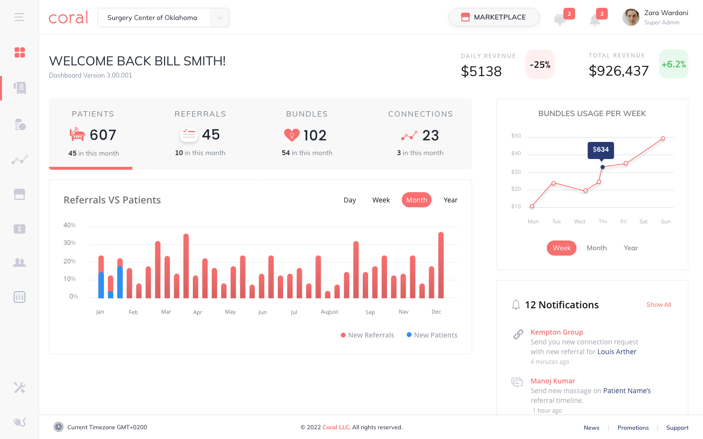
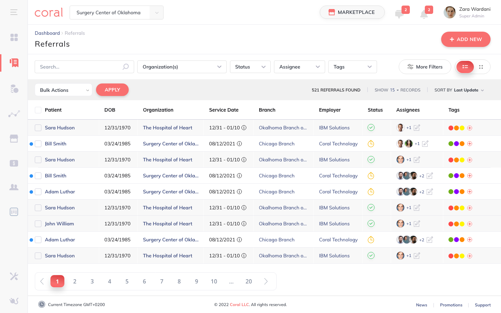
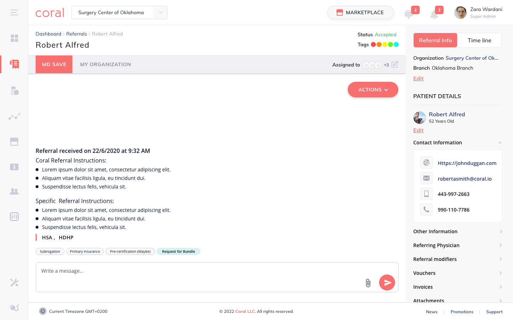
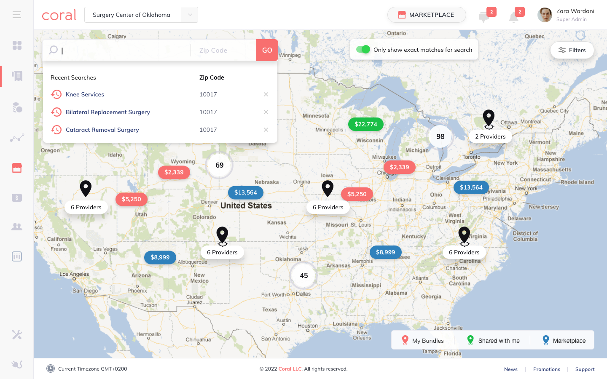
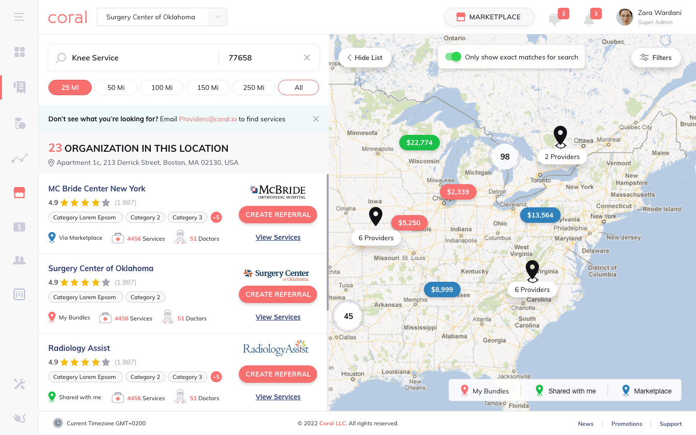
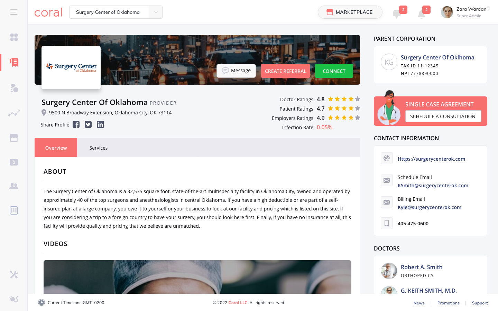
The progression from old design to final was driven entirely by research — not aesthetic preference. Each stage was reviewed, validated, and approved before advancing to the next.
Unifying referral detail, patient information, and messaging into one context-aware panel. In the old design: 3 screens, 3 navigation steps per care coordination task. In the new design: zero navigation — everything in the same view. This single architectural decision accounted for the largest share of the 29-point SUS improvement.
Once the interactive prototype was ready, I evaluated the design with real users to confirm the solution met their expectations — and to surface any remaining usability or experience issues before committing to development. This phase closed the measurement loop I opened at the start with the SUS baseline.
I used usability testing to directly investigate user behaviour as participants interacted with the prototype — observing where they hesitated, where they succeeded, and where the design failed their mental model. I ran both moderated and unmoderated formats to capture breadth and depth of findings.
Conducted via online interview and direct observation — allowing me to ask follow-up questions in real time and probe the reasoning behind user actions as they happened.
Session recordings supported by eye tracking and/or follow-up surveys — capturing natural, uninfluenced behaviour at scale without a facilitator in the room.
Alongside usability testing, I used three complementary methods to collect quantitative data and analytics that validated — or challenged — what usability sessions surfaced qualitatively.
Tested multiple versions of key screens simultaneously to determine which variant produced the strongest outcomes — removing opinion from layout and copy decisions.
Visualised how users moved around each page — identifying the most and least interacted areas, surfacing hidden friction points invisible to qualitative observation alone.
Gathered structured user feedback post-session to quantify satisfaction, capture sentiment on specific flows, and validate whether the redesign resolved the pain points identified in research.
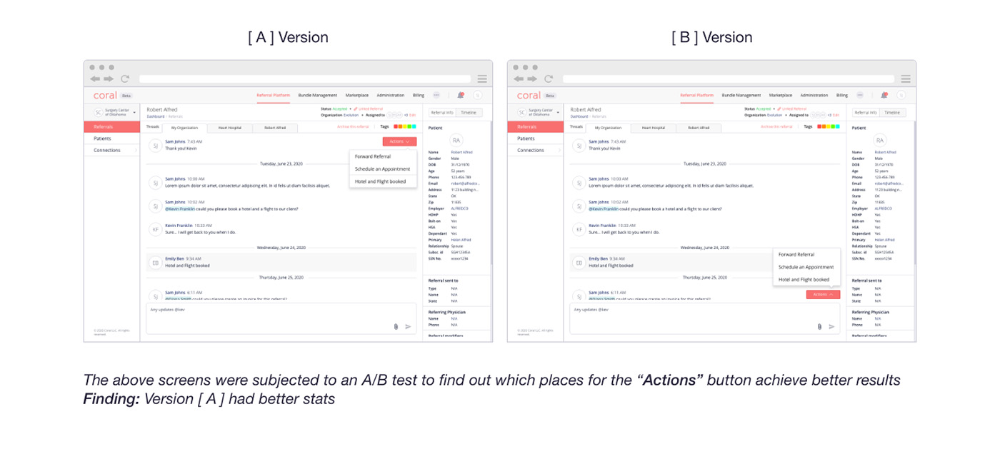
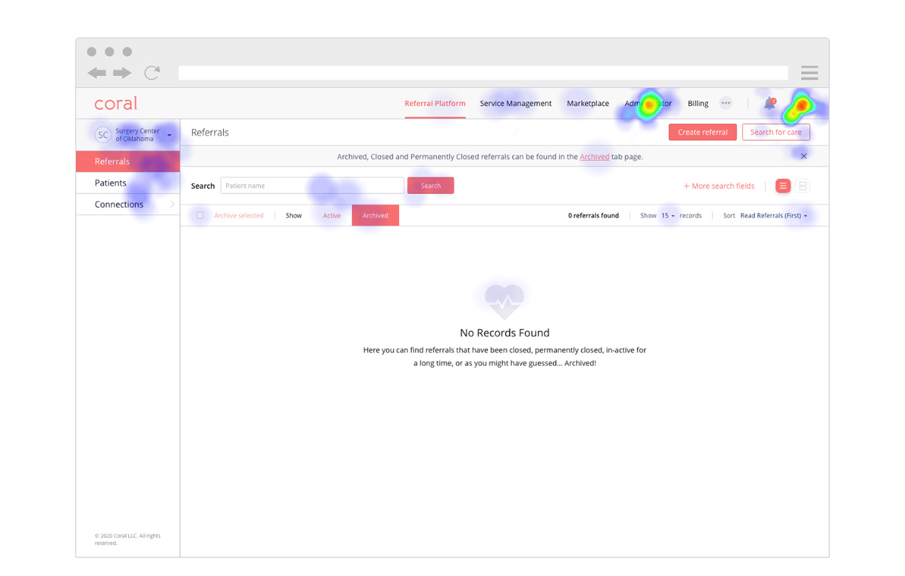
The final usability test re-administered the SUS scale across participants to validate the improvement against the 49.9 baseline I established at the start of the project. The result exceeded the 75+ target I had set with stakeholders.
The unified referral + messaging + patient panel — the architectural decision that came from Crazy 8s convergence — produced the largest individual improvement in task completion rate and confidence ratings. Users no longer navigated between screens to complete care coordination tasks. The design had solved the problem we'd identified in the journey map nine weeks earlier.
Strong UX craft got the screens right. Leadership got the team, the stakeholders, and the outcomes aligned — which is what made the craft matter.
I defined executive intent, success criteria, and design philosophy before any design work began. The team started with a brief I wrote and aligned with stakeholders — not with a blank Figma file.
I directed 2 UX designers across parallel research tracks, weekly wireframe critiques, and visual production reviews — making final structural calls and maintaining quality standards throughout, not just at handoff.
Unified panel layout, field reduction, messaging prominence, payment integration — each is traceable to a specific data point: a SUS score, a survey finding, an empathy map pattern, or a journey map emotional low.
The most important idea in the project — the unified panel — emerged from a Crazy 8s session I facilitated, not from my own sketching. Three people independently converged on the same pattern. That convergence was far more persuasive than a top-down decision.
I designed the IA, interaction model, and patterns for a coherent platform across Employers, Patients, Care Managers, and Providers — ensuring decisions for one user type didn't break the experience for another.
Baseline before design (49.9), target set (75+), tested after hi-fi (78). I brought a measurable outcome back to stakeholders — not just a portfolio-ready prototype.
Six measurable outcomes from a research-first, lead-driven transformation — each traceable to a specific decision made earlier in the process.
Not generic UX lessons — specific things I learned leading this team and project that changed how I approach design leadership.
The SUS score of 49.9 was more persuasive than any design argument I could have made. It gave me the authority to push for full transformation when stakeholders preferred minor iteration. Without a number, you're debating opinions. With one, you're debating evidence. I now treat baseline measurement as the non-negotiable first step on any engagement.
The unified panel layout emerged from a Crazy 8s session I facilitated — not from my own sketching. Three designers independently converged on the same pattern. That convergence was far more convincing than if I'd imposed the idea myself. As a lead, my job is to create conditions where the right answer can surface — and recognise it when it does.
The decision to unify referral, patient, and messaging context had more impact than every visual design choice combined. When leading a team, I now insist on resolving structural decisions before visual work begins. Changing IA after screens are in production wastes everyone's effort and kills momentum.
Designing for 4 user types meant building a shared IA and interaction model first, then applying role-based views on top. The temptation is to build four tailored experiences. The right answer is one coherent platform that respects each user's mental model. That architectural principle kept the team's work unified and the codebase maintainable.